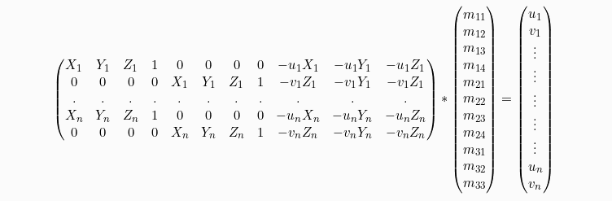

CS194-26 Final Projects
Project 1: Gradient Domain Fusion
Jacob Hanson-Regalado & Sean Kwan, Fall 2021
Project 1 Introduction
The insight that is crucial to this project is that an image's gradient is more important than it's intensity. We will use this property in order to seamlessly blend a source image and a background image. To achieve this we will
Project 1 Part 1: Toy Problem
To first get a grasp of domain fusion, we first solved a toy example under 3 conditions:
1. Minimize the gradient with respect to x from the source image and our new image.
2. Minimize the gradient with respect to y from the source image and our new image.
3. Match the top left corners of the source image and our new image.
If solved correctly the new image that is constructed will be the orginal image. To solve these three equations we constructed a least squares equation Av=b, where b is the gradients of the source image, A is the sparse matrix and v is the new image we are trying to solve for. In order to efficiently solve this least squares problem, I used scipy's sparse library, with scipy.sparse.coo_matrix used to construc the sparse A matrix and scipy.sparse.linalg.lsqr to solve the least squares problem. The max error between the two images is: 6.372680161348399e-14
Original image

New image
Project 1 Part 2: Poisson Blending
For poisson blending, we have a mask S on the source image denoting which regions we want to keep on top of the background image. For each pixel in the mask S, we check the 4-neighbors gradients. If the neighbor v_j is also in the mask S then we proceed as in the toy problem. If not, then we directly substitute the value for that neighbor v_j to that of the target background image t_j. This portion is similar to the toy problem, except we have to consider 4 neighbor gradients and a mask. Again, we used sparse matrices to efficiently solve the least squares problem.
Below are examples where the poisson blending worked well.
Background Image
Source Image
Poisson Image
Background Image
Source Image
Poisson Image
Background Image
Source Image
Poisson Image
Project 1 Bells and Whistles: Mixed Gradients
For mixed gradients, instead of getting the gradient with respect to the source image, we take the gradient in the source or target image with the larget gradient d_ij.
Below is the effect of using mixed gradients on a source and background image.
Background Image
Source Image
Mixed Image
Project 2: A Neural Algorithm of Artistic Style
Project 2 Introduction
The key insight to this project is that the representations of content and style in the Convolutional Neural Network are separable. This means that we can apply the style of an artwork on to the content of a photograph in order to get an image where the photo is in the style of the artwork.
Project 2 Part 1: Understanding Content
To get the content or the general shape and spatial arrangement of the photograph, we get the content representation from the higher layers in the CNN. WE store the layer representations in a matrix Fijl where its layer l, filter i, position j. Then for the original image p, we construct a matrix Pl and for the image to be generated x, we construct a matrix Fl. The loss function is:
The derivative of the content loss is:
Project 2 Part 2: Understanding Style
To get the style or the texture of the artwork, we include the feature representations from mutliple, creating a mutli-scale styler representation. This can be represented by a Gram matrix, Gl where:
To match the style of the original photograph with the style of the artwork, we minimized the mean-squared distance:
This generates the style loss function:
Where the derivative of the style loss is:
Project 2 Part 3: Combining Content and Style
To generate the CNN, we based it off the VGG-19 network. In addition, we combined the content loss and the style loss into a weighted total loss.
Project 2 Images
Content
Combined
Content
Combined
Content
Combined
Project 3: Augmented Reality
Project 3 Introduction
In this project, we utilize 2D points recorded in a video along with their known 3d world coordinates in order to calculate the camera projection matrix and place a 3d cube into the source video.
Source Video
Project 3 Part 1: Tracking Keypoints
In this section we select keypoints with known 3D coordinates for the first frame of our video using plt.ginput then utilize the opencv CSRT tracker to track these keypoints through each frame of the video.
Detected Keypoints
Project 3 Part 2: Calculating projection matrix
In this section we utilize the detected 2d keypoints along with their user-inputted known 3d coordinates to calculate the 3d -> 2d projection matrix for each frame using the following equation:
